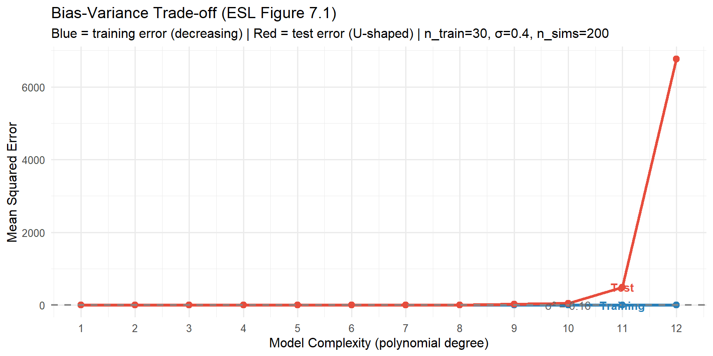

set.seed(42)
sigma_eps <- 0.4 # true noise SD
n_sims <- 200 # number of training sets
n_train <- 30
n_test <- 500
degrees <- 1:12
# Fixed test set (large, to get accurate estimate of test error)
x_test <- seq(0, 1, length.out=n_test)
y_test <- f_true(x_test) + rnorm(n_test, 0, sigma_eps)
results <- lapply(degrees, function(d) {
train_errs <- test_errs <- numeric(n_sims)
for (i in seq_len(n_sims)) {
# New training set each simulation
x_tr <- sort(runif(n_train, 0, 1))
y_tr <- f_true(x_tr) + rnorm(n_train, 0, sigma_eps)
fit <- lm(y_tr ~ poly(x_tr, d))
# Training MSE
train_errs[i] <- mean(residuals(fit)^2)
# Test MSE on fixed test set
x_poly <- poly(x_test, d, coefs=attr(poly(x_tr, d), "coefs"))
test_errs[i] <- mean((y_test - cbind(1, x_poly) %*% coef(fit))^2)
}
data.frame(degree=d,
train_mse = mean(train_errs),
test_mse = mean(test_errs))
})
res <- do.call(rbind, results)
# Add irreducible error baseline
irred <- sigma_eps^2
# Plot: training vs test error
ggplot(res, aes(x=degree)) +
geom_line(aes(y=train_mse), colour="#2980b9", linewidth=1.4) +
geom_point(aes(y=train_mse), colour="#2980b9", size=2.5) +
geom_line(aes(y=test_mse), colour="#e74c3c", linewidth=1.4) +
geom_point(aes(y=test_mse), colour="#e74c3c", size=2.5) +
geom_hline(yintercept=irred, linetype="dashed", colour="#888", linewidth=0.8) +
annotate("text", x=10, y=irred+0.01, label=paste0("σ² = ", irred),
colour="#666", size=3.5) +
annotate("text", x=11, y=res$train_mse[11]+0.03, label="Training",
colour="#2980b9", size=3.5, fontface="bold") +
annotate("text", x=11, y=res$test_mse[11]+0.03, label="Test",
colour="#e74c3c", size=3.5, fontface="bold") +
scale_x_continuous(breaks=degrees) +
labs(title="Bias-Variance Trade-off (ESL Figure 7.1)",
subtitle=paste0("Blue = training error (decreasing) | Red = test error (U-shaped) | ",
"n_train=", n_train, ", σ=", sigma_eps, ", n_sims=", n_sims),
x="Model Complexity (polynomial degree)",
y="Mean Squared Error") +
theme_minimal(base_size=12)